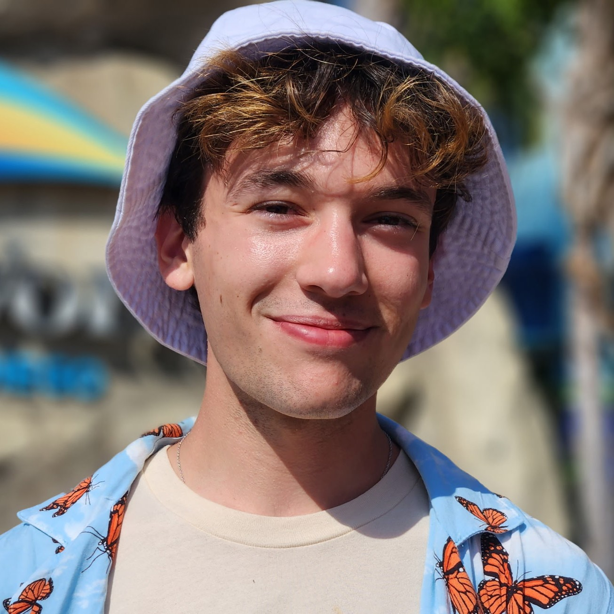
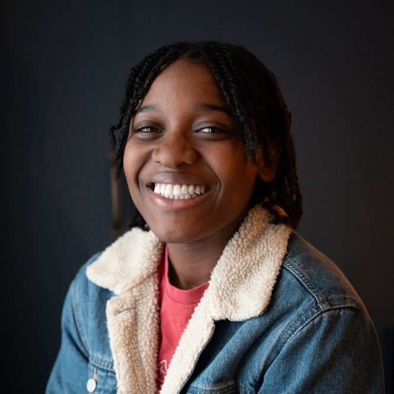
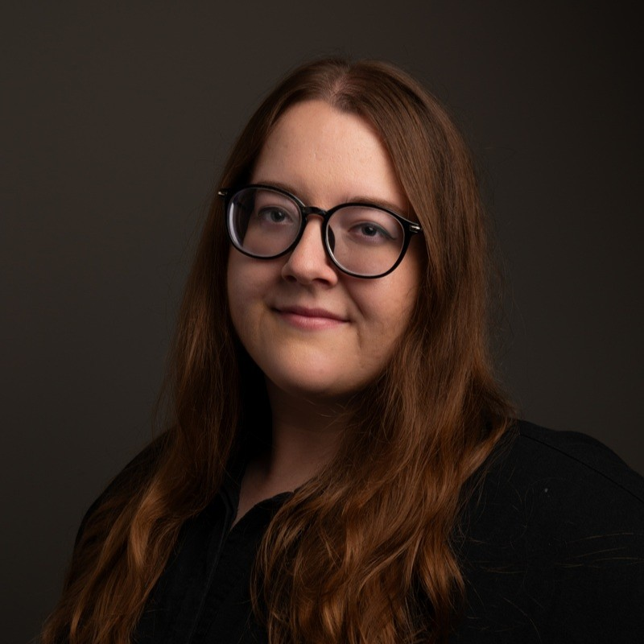

Meet the Cast and Crew
Jacob Painter
Director, Los Angeles
Jacob Painter is a Los Angeles-based production designer known for crafting visually rich, story-driven environments across film, television, and immersive media. A graduate of The Los Angeles Film School (2016), Jacob specializes in practical, stylized sets that blend theatricality with grounded detail. His work often incorporates handcrafted elements, unconventional materials, and a strong narrative sensibility, bringing worlds to life with a distinct visual voice. With a background in set design and art direction, Jacob continues to collaborate with filmmakers and creators to shape spaces that support story, emotion, and character.
Jess Grace Garcia
Producer, Los Angeles
Jess Grace Garcia (they/them) is a biracial, Latiné producer, director, and cinematographer, based out of Los Angeles. Most of their career has been spent working in the music industry helping artists and businesses tell their stories and connect with audiences. In 2008, Jess launched the start of their own company, Springwood Productions, where they worked with artists like Matt Greiner (August Burns Red), Vic Firth, Christina Grimmie, Miss Maryland 2018, and Reverbination. Other credits include lead colorist on Bar Burner (2018), and cinematography on Viscera (2019) and the critically acclaimed documentary 1946 (2023).Today, Jess focuses much of their time in bringing connection, healing, and growth to all that they do, especially in LGBTQIA+ spaces and communities. Their unique perspective being trans, poly, and queer, has pushed them to spend time in ministry, eventually becoming a pastor to bring understanding and solidarity to those in need of it.
Leo
Songwriter, London
Born in south-east London in the mid 2000s, Leo has been surrounded by a rich creative scene for as long as he can remember. Growing up, taking a trip to the theatre and falling into magical faraway worlds through the power of storytelling changed his life, and he’s known he wanted to be a writer ever since.He began writing poetry and plays aged six, when he also began classical training in piano and clarinet. As years passed he taught himself the guitar, saxophone, drums, and singing, expanding his musical world further. It was with this newfound exploration that Leo’s writing made an enthusiastic pivot to songs and full-blown musical theatre.

